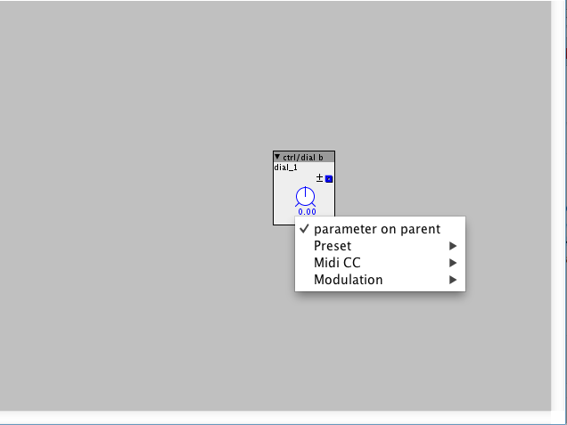

I am wanting to make subpatches that have controlls on the parent patch, but i cant seem to figure out how?? I see there is a "Controll on parent subpatch module" but its description is just its name, and doesnt have any instructions for use. How do i do this? I see lots of people making sub patches that have controlls on them, and that look like complete standalone axoloti object modules. I want to do this too. Any help?
How to use the "Controll on parent" Subpatch function?
JSZ
#2
In the subpatch, right-click on a control and check "control on parent" (if that's what it's called, can't remember). It should turn blue to indicate this property and appear on the subpatch when you include it in another patch.
More info here: http://community.axoloti.com/t/axoloti-user-guide/50 under Sub Patching
anon5189335
#3
Right click and select parameter on parent. Remember to save the subpatch before you close it or else the subpatch won't get updated and you won't be able to see the knob on the subpatch in the master patch

Burp
#5
Is it possible to change the order of subpatch parameters which shows up in the master patch?
cpwitz
#6
It's the order the objects appear in the subpatch. The topmost leftmost is the first. The ordering follows the same rules as the "execution order".